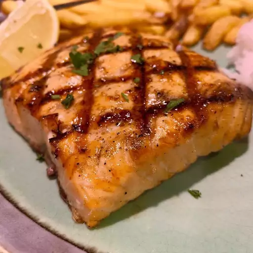

Grilled Salmon

Description
For this recipe, we'll be using a sweet and savory
savory salmon marinade. The salmon filets will be
seasoned with lemon pepper, garlic powder, and salt,
then marinated in a delicious combination of the
following ingredients: soy sauce, brown sugar, water,
and vegetable oil.
Ingredients
- 1 and a half pounds salmon fillets
- Lemon pepper to taste
- Garlic powder to taste
- Salt to taste
- One-third cup soy sauce
- One-third cup brown sugar
- One-third cup water
- One-fourth cup vegetable oil
Steps
- Season salmon fillets with lemon pepper,
garlic powder, and salt.
- In a small bowl, stir together soy sauce,
water, and vegetable oil until sugar is
dissolved. Place fish in a large resealable
plastic bag with the soy sauce mixture, seal,
and turn to coat. Refrigerate for at least
2 hours.
- Preheat grill for medium heat.
- Lightly oil grill grate. Place salmon on the
preheated grill, and discard marinade. Cook
salmon for 6 to 8 minutes per side, or until
the fish flakes easily with a fork.